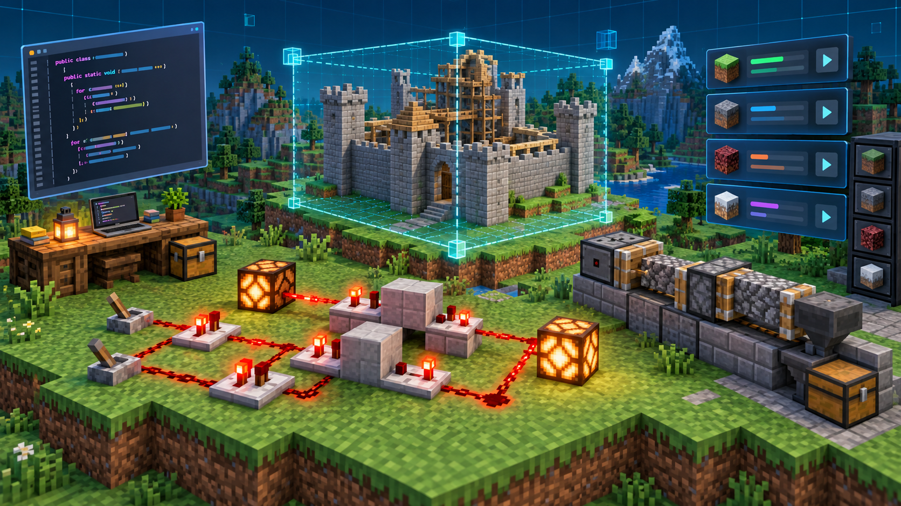

Tinkercad meets Minecraft
Eigene 3D-Modelle werden in Tinkercad entworfen, als Schematic-Datei exportiert und anschließend in einer Minecraft-Welt verwendet.

Eigene 3D-Modelle werden in Tinkercad entworfen, als Schematic-Datei exportiert und anschließend in einer Minecraft-Welt verwendet.
